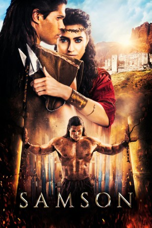

#10746 Samson
 
 IMDB-Wertung: 4.4 / 10
IMDB-Wertung: 4.4 / 10  Tomatometer: 25
Tomatometer: 25  Metascore: 17
Metascore: 17 
Nachdem er die Liebe seines Lebens an einen grausamen Philisterprinzen verloren hat, verteidigt ein junger Hebräer mit übernatürlicher Kraft sein Volk und opfert alles, um seine Liebe, sein Volk und seinen Gott zu rächen.
Jahr: 2018
Dauer: 105 Minuten
FSK:
Land: Süd-Afrika Studio: GEM EntertainmentTonspuren: DTS - ,
Untertitel: Deutsch,
Auflösung: 1080p (1920x816) Größe: 5990 MB
Genre: Action, Drama
Regisseur: Bruce Macdonald, Gabriel Sabloff
Drehbuch: Jason Baumgardner, Zach Smith, Jason Baumgardner, Zach Smith, Galen Gilbert
Soundtrack: Will Musser
Darsteller:
- Taylor James als Samson
 Billy Zane als King Balek
Billy Zane als King Balek- Lindsay Wagner als Zealphonis
- Caitlin Leahy als Delilah
 Rutger Hauer als Manoah
Rutger Hauer als Manoah Jackson Rathbone als Rallah
Jackson Rathbone als Rallah Brandon Auret als Ashdod
Brandon Auret als Ashdod- Frances Sholto-Douglas als Taren
 Greg Kriek als Caleb
Greg Kriek als Caleb- Sven Ruygrok als Orum
 Matthew Dylan Roberts als Ahar
Matthew Dylan Roberts als Ahar- James Ryan als Tobias
- Chad Phillips als Defeated Hebrew
- Rehane Abrahams als Helline
- Duane Behrens als Philistine Soldier
 Joe Vaz als Priest of Dagon
Joe Vaz als Priest of Dagon- Califf Ryan als Treus
- Danny Keough als Wadesh
- Andre Jacobs als Levite Priest
- Garth Collins als Jailer
- Casey Dolan als Tobias Wife
- Lily Spangenberg als Tobias Daughter
- Caroline Midgley als Frail Woman
- Alex-Connor Sawyer als Thin Boy
- Hennie Bosman als Golian
- Amit Raz als Sentry
- Dylan Williams als Bolcom
- Gordon van der Spuy als Philistine Sentry
- Martin Van Geems als Hebrew Attendant
- Riaz Solker als Philistine Commander
- Dale Jackson als Philistine Sergeant
- Akram Allie als Philistine Soldier
- Dylan Skews als Philistine Archer
- Scott George als Ringmaster
- Ares Afonso als Beaten Up Hebrew (uncredited)
Datei: X:\2018(N-Z)\Samson (2018, FSK, 1920x816).mkv seit 22.02.2019
Festplatte: HD 2018(G-Z)-2019(A-Z)
 Es gibt insgesamt 172 Filme in der Gruppe '2018(N-Z)'
Es gibt insgesamt 172 Filme in der Gruppe '2018(N-Z)'